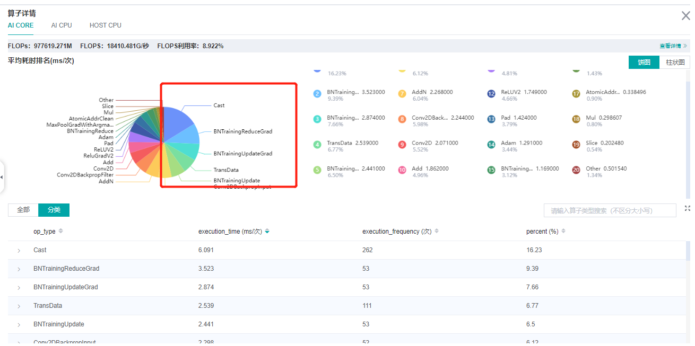
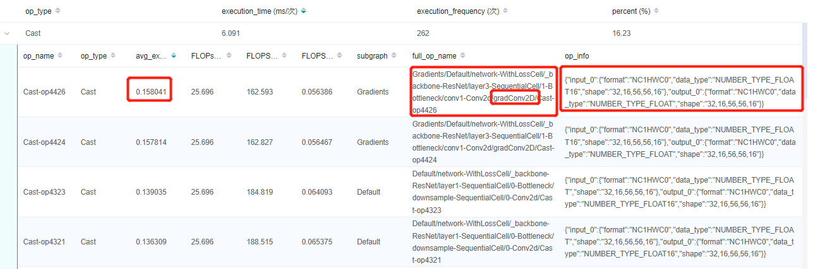
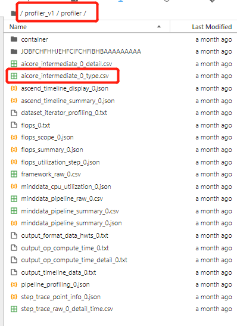
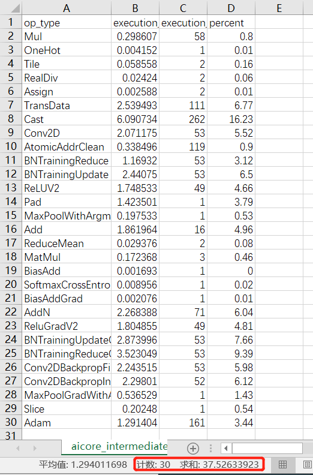
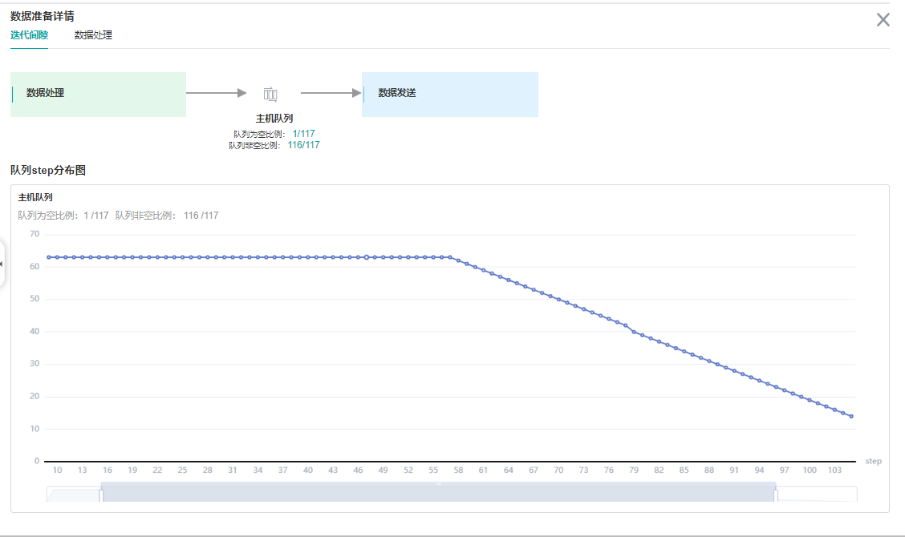
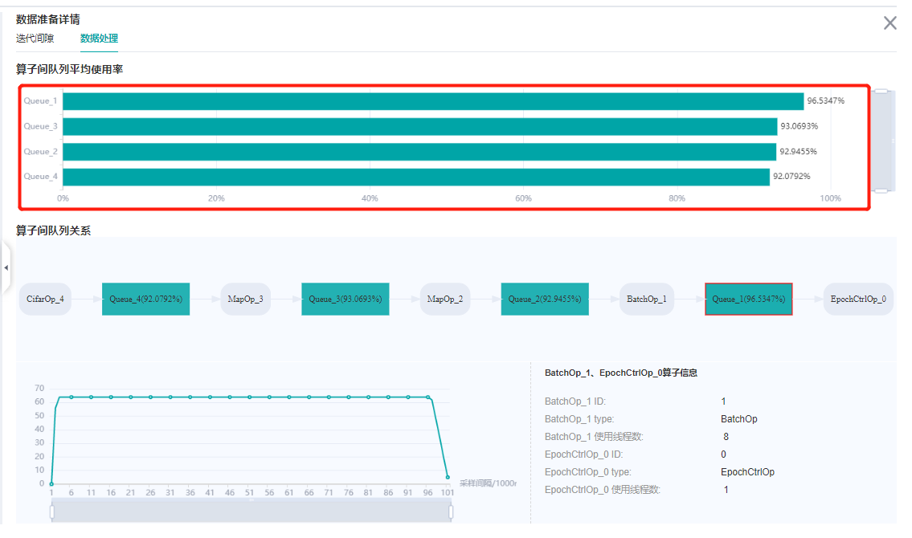
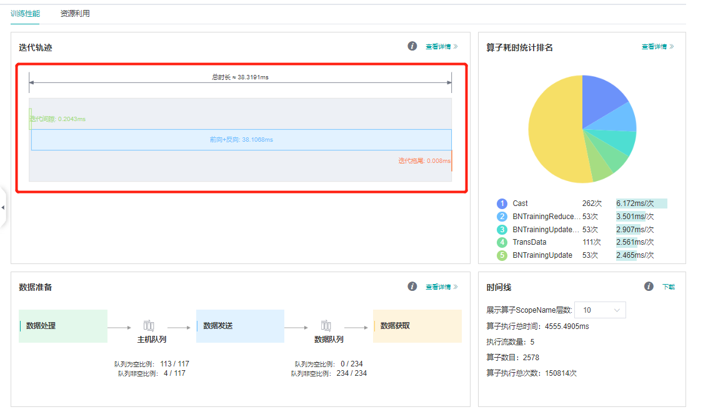
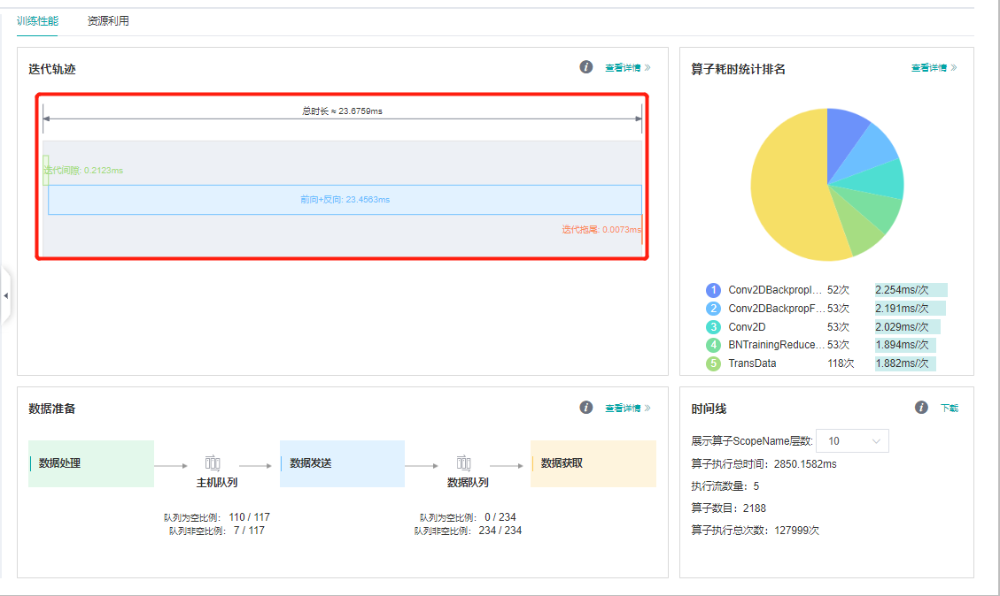
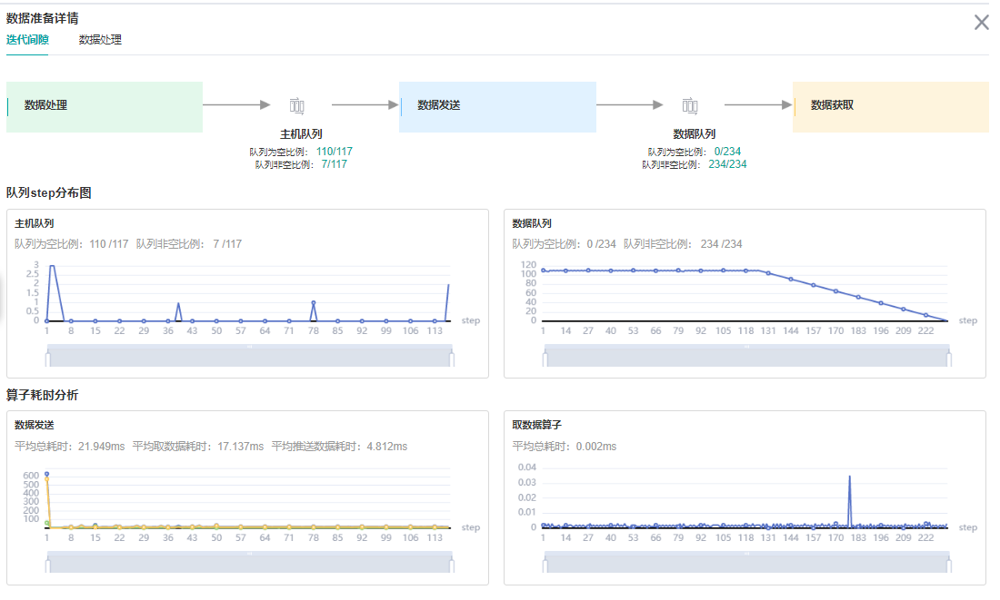
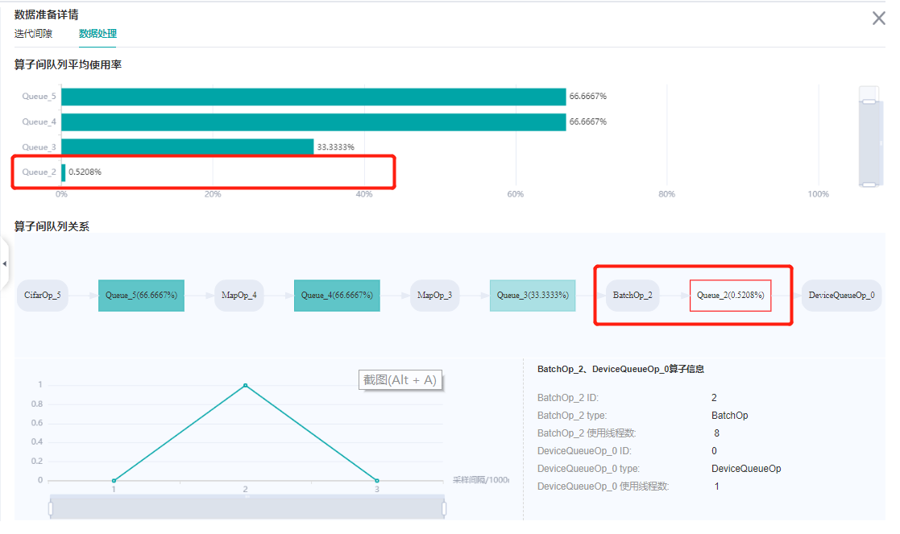

网络迁移调试实例

本章将以经典网络 ResNet50 为例，结合代码来详细介绍网络迁移方法。
模型分析与准备
假设已经按照环境准备章节配置好了MindSpore的运行环境。且假设resnet50在models仓还没有实现。
首先需要分析算法及网络结构。
残差神经网络（ResNet）由微软研究院何凯明等人提出，通过ResNet单元，成功训练152层神经网络，赢得了ILSVRC2015冠军。传统的卷积网络或全连接网络或多或少存在信息丢失的问题，还会造成梯度消失或爆炸，导致深度网络训练失败，ResNet则在一定程度上解决了这个问题。通过将输入信息传递给输出，确保信息完整性。整个网络只需要学习输入和输出的差异部分，简化了学习目标和难度。ResNet的结构大幅提高了神经网络训练的速度，并且大大提高了模型的准确率。
论文：Kaiming He, Xiangyu Zhang, Shaoqing Ren, Jian Sun.”Deep Residual Learning for Image Recognition”
我们找到了一份PyTorch ResNet50 Cifar10的示例代码，里面包含了PyTorch ResNet的实现，Cifar10数据处理，网络训练及推理流程。
checklist
在阅读论文和参考实现过程中，我们分析填写以下checklist：
trick |
记录 |
|---|---|
数据增强 |
RandomCrop，RandomHorizontalFlip，Resize，Normalize |
学习率衰减策略 |
固定学习率 0.001 |
优化器参数 |
Adam优化器，weight_decay=1e-5 |
训练参数 |
batch_size=32，epochs=90 |
网络结构优化点 |
Bottleneck |
训练流程优化点 |
无 |
复现参考实现
下载PyTorch的代码，cifar10的数据集，对网络进行训练：
Train Epoch: 89 [0/1563 (0%)] Loss: 0.010917
Train Epoch: 89 [100/1563 (6%)] Loss: 0.013386
Train Epoch: 89 [200/1563 (13%)] Loss: 0.078772
Train Epoch: 89 [300/1563 (19%)] Loss: 0.031228
Train Epoch: 89 [400/1563 (26%)] Loss: 0.073462
Train Epoch: 89 [500/1563 (32%)] Loss: 0.098645
Train Epoch: 89 [600/1563 (38%)] Loss: 0.112967
Train Epoch: 89 [700/1563 (45%)] Loss: 0.137923
Train Epoch: 89 [800/1563 (51%)] Loss: 0.143274
Train Epoch: 89 [900/1563 (58%)] Loss: 0.088426
Train Epoch: 89 [1000/1563 (64%)] Loss: 0.071185
Train Epoch: 89 [1100/1563 (70%)] Loss: 0.094342
Train Epoch: 89 [1200/1563 (77%)] Loss: 0.126669
Train Epoch: 89 [1300/1563 (83%)] Loss: 0.245604
Train Epoch: 89 [1400/1563 (90%)] Loss: 0.050761
Train Epoch: 89 [1500/1563 (96%)] Loss: 0.080932
Test set: Average loss: -9.7052, Accuracy: 91%
Finished Training
可以从resnet_pytorch_res下载到训练时日志和保存的参数文件。
分析API/特性缺失
API分析
PyTorch 使用API |
MindSpore 对应API |
是否有差异 |
|---|---|---|
|
|
有，差异对比 |
|
|
有，差异对比 |
|
|
无 |
|
|
有，差异对比 |
|
|
无 |
|
|
有，差异对比 |
|
|
无 |
查看PyTorch API映射，我们获取到有四个API有差异。
功能分析
Pytorch 使用功能 |
MindSpore 对应功能 |
|---|---|
|
|
|
|
|
|
|
|
|
|
|
|
（由于MindSpore 和 PyTorch 在接口设计上不完全一致，这里仅列出关键功能的比对）
经过API和功能分析，我们发现，相比 PyTorch，MindSpore 上没有缺失的API和功能。
MindSpore模型实现
数据集
PyTorch 的 cifar10数据集处理如下：
import torch
import torchvision.transforms as trans
import torchvision
train_transform = trans.Compose([
trans.RandomCrop(32, padding=4),
trans.RandomHorizontalFlip(0.5),
trans.Resize(224),
trans.ToTensor(),
trans.Normalize([0.4914, 0.4822, 0.4465], [0.2023, 0.1994, 0.2010]),
])
test_transform = trans.Compose([
trans.Resize(224),
trans.RandomHorizontalFlip(0.5),
trans.ToTensor(),
trans.Normalize([0.4914, 0.4822, 0.4465], [0.2023, 0.1994, 0.2010]),
])
train_set = torchvision.datasets.CIFAR10(root='./data', train=True, transform=train_transform)
train_loader = torch.utils.data.DataLoader(train_set, batch_size=32, shuffle=True)
test_set = torchvision.datasets.CIFAR10(root='./data', train=False, transform=test_transform)
test_loader = torch.utils.data.DataLoader(test_set, batch_size=1, shuffle=False)
如果本地没有cifar10数据集，在使用torchvision.datasets.CIFAR10时添加download=True可以自动下载。
cifar10数据集目录组织参考：
└─dataset_path
├─cifar-10-batches-bin # train dataset
├─ data_batch_1.bin
├─ data_batch_2.bin
├─ data_batch_3.bin
├─ data_batch_4.bin
├─ data_batch_5.bin
└─cifar-10-verify-bin # evaluate dataset
├─ test_batch.bin
这个操作在MindSpore上实现如下：
import mindspore as ms
import mindspore.dataset as ds
from mindspore.dataset import vision
from mindspore.dataset.transforms.transforms import TypeCast
def create_cifar_dataset(dataset_path, do_train, batch_size=32, image_size=(224, 224), rank_size=1, rank_id=0):
dataset = ds.Cifar10Dataset(dataset_path, shuffle=do_train,
num_shards=rank_size, shard_id=rank_id)
# define map operations
trans = []
if do_train:
trans += [
vision.RandomCrop((32, 32), (4, 4, 4, 4)),
vision.RandomHorizontalFlip(prob=0.5)
]
trans += [
vision.Resize(image_size),
vision.Rescale(1.0 / 255.0, 0.0),
vision.Normalize([0.4914, 0.4822, 0.4465], [0.2023, 0.1994, 0.2010]),
vision.HWC2CHW()
]
type_cast_op = TypeCast(ms.int32)
data_set = dataset.map(operations=type_cast_op, input_columns="label")
data_set = data_set.map(operations=trans, input_columns="image")
# apply batch operations
data_set = data_set.batch(batch_size, drop_remainder=do_train)
return data_set
网络模型实现
参考PyTorch resnet，我们实现了一版MindSpore resnet，通过比较工具发现，实现只有几个地方有差别：
# Conv2d PyTorch
nn.Conv2d(
in_planes,
out_planes,
kernel_size=3,
stride=stride,
padding=dilation,
groups=groups,
bias=False,
dilation=dilation,
)
##########################################
# Conv2d MindSpore
nn.Conv2d(
in_planes,
out_planes,
kernel_size=3,
pad_mode="pad",
stride=stride,
padding=dilation,
group=groups,
has_bias=False,
dilation=dilation,
)
# PyTorch
nn.Module
############################################
# MindSpore
nn.Cell
# PyTorch
nn.ReLU(inplace=True)
############################################
# MindSpore
nn.ReLU()
# PyTorch 图构造
forward
############################################
# MindSpore 图构造
construct
# PyTorch 带padding的MaxPool2d
maxpool = nn.MaxPool2d(kernel_size=3, stride=2, padding=1)
############################################
# MindSpore 带padding的MaxPool2d
maxpool = nn.SequentialCell([
nn.Pad(paddings=((0, 0), (0, 0), (1, 1), (1, 1)), mode="CONSTANT"),
nn.MaxPool2d(kernel_size=3, stride=2)])
# PyTorch AdaptiveAvgPool2d
avgpool = nn.AdaptiveAvgPool2d((1, 1))
############################################
# MindSpore ReduceMean 和 AdaptiveAvgPool2d output shape是1时功能一致，且速度会快
mean = ops.ReduceMean(keep_dims=True)
# PyTorch 全连接
fc = nn.Linear(512 * block.expansion, num_classes)
############################################
# MindSpore 全连接
fc = nn.Dense(512 * block.expansion, num_classes)
# PyTorch Sequential
nn.Sequential
############################################
# MindSpore SequentialCell
nn.SequentialCell
# PyTorch 初始化
for m in self.modules():
if isinstance(m, nn.Conv2d):
nn.init.kaiming_normal_(m.weight, mode="fan_out", nonlinearity="relu")
elif isinstance(m, (nn.BatchNorm2d, nn.GroupNorm)):
nn.init.constant_(m.weight, 1)
nn.init.constant_(m.bias, 0)
# Zero-initialize the last BN in each residual branch,
# so that the residual branch starts with zeros, and each residual block behaves like an identity.
# This improves the model by 0.2~0.3% according to https://arxiv.org/abs/1706.02677
if zero_init_residual:
for m in self.modules():
if isinstance(m, Bottleneck) and m.bn3.weight is not None:
nn.init.constant_(m.bn3.weight, 0) # type: ignore[arg-type]
elif isinstance(m, BasicBlock) and m.bn2.weight is not None:
nn.init.constant_(m.bn2.weight, 0) # type: ignore[arg-type]
############################################
# MindSpore 初始化
for _, cell in self.cells_and_names():
if isinstance(cell, nn.Conv2d):
cell.weight.set_data(ms.common.initializer.initializer(
ms.common.initializer.HeNormal(negative_slope=0, mode='fan_out', nonlinearity='relu'),
cell.weight.shape, cell.weight.dtype))
elif isinstance(cell, (nn.BatchNorm2d, nn.GroupNorm)):
cell.gamma.set_data(ms.common.initializer.initializer("ones", cell.gamma.shape, cell.gamma.dtype))
cell.beta.set_data(ms.common.initializer.initializer("zeros", cell.beta.shape, cell.beta.dtype))
elif isinstance(cell, (nn.Dense)):
cell.weight.set_data(ms.common.initializer.initializer(
ms.common.initializer.HeUniform(negative_slope=math.sqrt(5)),
cell.weight.shape, cell.weight.dtype))
cell.bias.set_data(ms.common.initializer.initializer("zeros", cell.bias.shape, cell.bias.dtype))
# Zero-initialize the last BN in each residual branch,
# so that the residual branch starts with zeros, and each residual block behaves like an identity.
# This improves the model by 0.2~0.3% according to https://arxiv.org/abs/1706.02677
if zero_init_residual:
for _, cell in self.cells_and_names():
if isinstance(cell, Bottleneck) and cell.bn3.gamma is not None:
cell.bn3.gamma.set_data("zeros", cell.bn3.gamma.shape, cell.bn3.gamma.dtype)
elif isinstance(cell, BasicBlock) and cell.bn2.weight is not None:
cell.bn2.gamma.set_data("zeros", cell.bn2.gamma.shape, cell.bn2.gamma.dtype)
Loss函数
PyTorch：
net_loss = torch.nn.CrossEntropyLoss()
MindSpore:
loss = nn.SoftmaxCrossEntropyWithLogits(sparse=True, reduction='mean')
学习率与优化器
PyTorch：
net_opt = torch.optim.Adam(net.parameters(), 0.001, weight_decay=1e-5)
MindSpore:
optimizer = nn.Adam(resnet.trainable_params(), 0.001, weight_decay=1e-5)
模型验证
在复现参考实现章节我们获取到了训练好的PyTorch的参数，我们怎样将参数文件转换成MindSpore能够使用的checkpoint文件呢？
基本需要以下几个流程：
打印PyTorch的参数文件里所有参数的参数名和shape，打印需要加载参数的MindSpore Cell里所有参数的参数名和shape；
比较参数名和shape，构造参数映射关系；
按照参数映射将PyTorch的参数 -> numpy -> MindSpore的Parameter，构成Parameter List后保存成checkpoint；
单元测试：PyTorch加载参数，MindSpore加载参数，构造随机输入，对比输出。
打印参数
import torch
# 通过PyTorch参数文件，打印PyTorch的参数文件里所有参数的参数名和shape，返回参数字典
def pytorch_params(pth_file):
par_dict = torch.load(pth_file, map_location='cpu')
pt_params = {}
for name in par_dict:
parameter = par_dict[name]
print(name, parameter.numpy().shape)
pt_params[name] = parameter.numpy()
return pt_params
# 通过MindSpore的Cell，打印Cell里所有参数的参数名和shape，返回参数字典
def mindspore_params(network):
ms_params = {}
for param in network.get_parameters():
name = param.name
value = param.data.asnumpy()
print(name, value.shape)
ms_params[name] = value
return ms_params
执行
from resnet_ms.src.resnet import resnet50 as ms_resnet50
pth_path = "resnet.pth"
pt_param = pytorch_params(pth_path)
print("="*20)
ms_param = mindspore_params(ms_resnet50(num_classes=10))
得到
conv1.weight (64, 3, 7, 7)
bn1.weight (64,)
bn1.bias (64,)
bn1.running_mean (64,)
bn1.running_var (64,)
bn1.num_batches_tracked ()
layer1.0.conv1.weight (64, 64, 1, 1)
......
===========================================
conv1.weight (64, 3, 7, 7)
bn1.moving_mean (64,)
bn1.moving_variance (64,)
bn1.gamma (64,)
bn1.beta (64,)
layer1.0.conv1.weight (64, 64, 1, 1)
......
参数映射及checkpoint保存
发现除了BatchNorm的参数外，其他参数的名字和shape是完全能够对的上的，这时可以写一个简单的python脚本来做参数映射:
import mindspore as ms
def param_convert(ms_params, pt_params, ckpt_path):
# 参数名映射字典
bn_ms2pt = {"gamma": "weight",
"beta": "bias",
"moving_mean": "running_mean",
"moving_variance": "running_var"}
new_params_list = []
for ms_param in ms_params.keys():
# 在参数列表中，只有包含bn和downsample.1的参数是BatchNorm算子的参数
if "bn" in ms_param or "downsample.1" in ms_param:
ms_param_item = ms_param.split(".")
pt_param_item = ms_param_item[:-1] + [bn_ms2pt[ms_param_item[-1]]]
pt_param = ".".join(pt_param_item)
# 如找到参数对应且shape一致，加入到参数列表
if pt_param in pt_params and pt_params[pt_param].shape == ms_params[ms_param].shape:
ms_value = pt_params[pt_param]
new_params_list.append({"name": ms_param, "data": ms.Tensor(ms_value)})
else:
print(ms_param, "not match in pt_params")
# 其他参数
else:
# 如找到参数对应且shape一致，加入到参数列表
if ms_param in pt_params and pt_params[ms_param].shape == ms_params[ms_param].shape:
ms_value = pt_params[ms_param]
new_params_list.append({"name": ms_param, "data": ms.Tensor(ms_value)})
else:
print(ms_param, "not match in pt_params")
# 保存成MindSpore的checkpoint
ms.save_checkpoint(new_params_list, ckpt_path)
ckpt_path = "resnet50.ckpt"
param_convert(ms_params, pt_params, ckpt_path)
执行完成可以在ckpt_path找到生成的checkpoint文件。
当参数映射关系非常复杂，通过参数名很难找到映射关系时，可以写一个参数映射字典，如：
param = {
'bn1.bias': 'bn1.beta',
'bn1.weight': 'bn1.gamma',
'IN.weight': 'IN.gamma',
'IN.bias': 'IN.beta',
'BN.bias': 'BN.beta',
'in.weight': 'in.gamma',
'bn.weight': 'bn.gamma',
'bn.bias': 'bn.beta',
'bn2.weight': 'bn2.gamma',
'bn2.bias': 'bn2.beta',
'bn3.bias': 'bn3.beta',
'bn3.weight': 'bn3.gamma',
'BN.running_mean': 'BN.moving_mean',
'BN.running_var': 'BN.moving_variance',
'bn.running_mean': 'bn.moving_mean',
'bn.running_var': 'bn.moving_variance',
'bn1.running_mean': 'bn1.moving_mean',
'bn1.running_var': 'bn1.moving_variance',
'bn2.running_mean': 'bn2.moving_mean',
'bn2.running_var': 'bn2.moving_variance',
'bn3.running_mean': 'bn3.moving_mean',
'bn3.running_var': 'bn3.moving_variance',
'downsample.1.running_mean': 'downsample.1.moving_mean',
'downsample.1.running_var': 'downsample.1.moving_variance',
'downsample.0.weight': 'downsample.1.weight',
'downsample.1.bias': 'downsample.1.beta',
'downsample.1.weight': 'downsample.1.gamma'
}
再结合param_convert的相关流程就可以获取到参数文件了。
单元测试
获得对应的参数文件后，我们需要对整个模型做一次单元测试，保证模型的一致性：
import numpy as np
import torch
import mindspore as ms
from resnet_ms.src.resnet import resnet50 as ms_resnet50
from resnet_pytorch.resnet import resnet50 as pt_resnet50
def check_res(pth_path, ckpt_path):
inp = np.random.uniform(-1, 1, (4, 3, 224, 224)).astype(np.float32)
# 注意做单元测试时，需要给Cell打训练或推理的标签
ms_resnet = ms_resnet50(num_classes=10).set_train(False)
pt_resnet = pt_resnet50(num_classes=10).eval()
pt_resnet.load_state_dict(torch.load(pth_path, map_location='cpu'))
ms.load_checkpoint(ckpt_path, ms_resnet)
print("========= pt_resnet conv1.weight ==========")
print(pt_resnet.conv1.weight.detach().numpy().reshape((-1,))[:10])
print("========= ms_resnet conv1.weight ==========")
print(ms_resnet.conv1.weight.data.asnumpy().reshape((-1,))[:10])
pt_res = pt_resnet(torch.from_numpy(inp))
ms_res = ms_resnet(ms.Tensor(inp))
print("========= pt_resnet res ==========")
print(pt_res)
print("========= ms_resnet res ==========")
print(ms_res)
print("diff", np.max(np.abs(pt_res.detach().numpy() - ms_res.asnumpy())))
pth_path = "resnet.pth"
ckpt_path = "resnet50.ckpt"
check_res(pth_path, ckpt_path)
注意做单元测试时，需要给Cell打训练或推理的标签，PyTorch 训练 .train()，推理.eval()，MindSpore训练.set_train()，推理.set_train(False)。
========= pt_resnet conv1.weight ==========
[ 1.091892e-40 -1.819391e-39 3.509566e-40 -8.281730e-40 1.207908e-39
-3.576954e-41 -1.000796e-39 1.115791e-39 -1.077758e-39 -6.031427e-40]
========= ms_resnet conv1.weight ==========
[ 1.091892e-40 -1.819391e-39 3.509566e-40 -8.281730e-40 1.207908e-39
-3.576954e-41 -1.000796e-39 1.115791e-39 -1.077758e-39 -6.031427e-40]
========= pt_resnet res ==========
tensor([[-15.1945, -5.6529, 6.5738, 9.7807, -2.4615, 3.0365, -4.7216,
-11.1005, 2.7121, -9.3612],
[-14.2412, -5.9004, 5.6366, 9.7030, -1.6322, 2.6926, -3.7307,
-10.7582, 1.4195, -7.9930],
[-13.4795, -5.6582, 5.6432, 8.9152, -1.5169, 2.6958, -3.4469,
-10.5300, 1.3318, -8.1476],
[-13.6448, -5.4239, 5.8254, 9.3094, -2.1969, 2.7042, -4.1194,
-10.4388, 1.9331, -8.1746]], grad_fn=<AddmmBackward0>)
========= ms_resnet res ==========
[[-15.194535 -5.652934 6.5737996 9.780719 -2.4615316 3.0365033
-4.7215843 -11.100524 2.7121294 -9.361177 ]
[-14.24116 -5.9004383 5.6366115 9.702984 -1.6322318 2.69261
-3.7307222 -10.758192 1.4194587 -7.992969 ]
[-13.47945 -5.658216 5.6432185 8.915173 -1.5169426 2.6957715
-3.446888 -10.529953 1.3317728 -8.147601 ]
[-13.644804 -5.423854 5.825424 9.309403 -2.1969485 2.7042081
-4.119426 -10.438771 1.9330862 -8.174606 ]]
diff 2.861023e-06
可以看到最后的结果差不大，基本符合预期。当结果差很大时需要逐层对比下输出，这里不多做说明。
推理流程
对比下PyTorch的推理:
import torch
import torchvision.transforms as trans
import torchvision
import torch.nn.functional as F
from resnet import resnet50
def test_epoch(model, device, data_loader):
model.eval()
test_loss = 0
correct = 0
with torch.no_grad():
for data, target in data_loader:
output = model(data.to(device))
test_loss += F.nll_loss(output, target.to(device), reduction='sum').item() # sum up batch loss
pred = output.max(1)[1] # get the index of the max log-probability
correct += pred.eq(target.to(device)).sum().item()
test_loss /= len(data_loader.dataset)
print('\nTest set: Average loss: {:.4f}, Accuracy: {:.0f}%\n'.format(
test_loss, 100. * correct / len(data_loader.dataset)))
use_cuda = torch.cuda.is_available()
device = torch.device("cuda" if use_cuda else "cpu")
test_transform = trans.Compose([
trans.Resize(224),
trans.RandomHorizontalFlip(0.5),
trans.ToTensor(),
trans.Normalize([0.4914, 0.4822, 0.4465], [0.2023, 0.1994, 0.2010]),
])
test_set = torchvision.datasets.CIFAR10(root='./data', train=False, transform=test_transform)
test_loader = torch.utils.data.DataLoader(test_set, batch_size=1, shuffle=False)
# 2. define forward network
net = resnet50(num_classes=10).cuda() if use_cuda else resnet50(num_classes=10)
net.load_state_dict(torch.load("./resnet.pth", map_location='cpu'))
test_epoch(net, device, test_loader)
Test set: Average loss: -9.7075, Accuracy: 91%
MindSpore实现这个流程：
import numpy as np
import mindspore as ms
from mindspore import nn
from src.dataset import create_dataset
from src.model_utils.moxing_adapter import moxing_wrapper
from src.model_utils.config import config
from src.utils import init_env
from src.resnet import resnet50
def test_epoch(model, data_loader, loss_func):
model.set_train(False)
test_loss = 0
correct = 0
for data, target in data_loader:
output = model(data)
test_loss += float(loss_func(output, target).asnumpy())
pred = np.argmax(output.asnumpy(), axis=1)
correct += (pred == target.asnumpy()).sum()
dataset_size = data_loader.get_dataset_size()
test_loss /= dataset_size
print('\nTest set: Average loss: {:.4f}, Accuracy: {:.0f}%\n'.format(
test_loss, 100. * correct / dataset_size))
@moxing_wrapper()
def test_net():
init_env(config)
eval_dataset = create_dataset(config.dataset_name, config.data_path, False, batch_size=1,
image_size=(int(config.image_height), int(config.image_width)))
resnet = resnet50(num_classes=config.class_num)
ms.load_checkpoint(config.checkpoint_path, resnet)
loss = nn.SoftmaxCrossEntropyWithLogits(sparse=True, reduction='mean')
test_epoch(resnet, eval_dataset, loss)
if __name__ == '__main__':
test_net()
执行
python test.py --data_path data/cifar10/ --checkpoint_path resnet.ckpt
得到推理精度结果：
run standalone!
Test set: Average loss: 0.3240, Accuracy: 91%
推理精度一致。
训练流程
PyTorch的训练流程参考pytoch resnet50 cifar10的示例代码，日志文件和训练好的pth保存在resnet_pytorch_res。
对应的MindSpore代码：
import numpy as np
import mindspore as ms
from mindspore import nn
from mindspore.profiler import Profiler
from src.dataset import create_dataset
from src.model_utils.moxing_adapter import moxing_wrapper
from src.model_utils.config import config
from src.utils import init_env
from src.resnet import resnet50
def train_epoch(epoch, model, data_loader):
model.set_train()
dataset_size = data_loader.get_dataset_size()
for batch_idx, (data, target) in enumerate(data_loader):
loss = float(model(data, target)[0].asnumpy())
if batch_idx % 100 == 0:
print('Train Epoch: {} [{}/{} ({:.0f}%)]\tLoss: {:.6f}'.format(
epoch, batch_idx, dataset_size,
100. * batch_idx / dataset_size, loss))
def test_epoch(model, data_loader, loss_func):
model.set_train(False)
test_loss = 0
correct = 0
for data, target in data_loader:
output = model(data)
test_loss += float(loss_func(output, target).asnumpy())
pred = np.argmax(output.asnumpy(), axis=1)
correct += (pred == target.asnumpy()).sum()
dataset_size = data_loader.get_dataset_size()
test_loss /= dataset_size
print('\nTest set: Average loss: {:.4f}, Accuracy: {:.0f}%\n'.format(
test_loss, 100. * correct / dataset_size))
@moxing_wrapper()
def train_net():
init_env(config)
if config.enable_profiling:
profiler = Profiler()
train_dataset = create_dataset(config.dataset_name, config.data_path, True, batch_size=config.batch_size,
image_size=(int(config.image_height), int(config.image_width)),
rank_size=40, rank_id=config.rank_id)
eval_dataset = create_dataset(config.dataset_name, config.data_path, False, batch_size=1,
image_size=(int(config.image_height), int(config.image_width)))
config.steps_per_epoch = train_dataset.get_dataset_size()
resnet = resnet50(num_classes=config.class_num)
optimizer = nn.Adam(resnet.trainable_params(), config.lr, weight_decay=config.weight_decay)
loss = nn.SoftmaxCrossEntropyWithLogits(sparse=True, reduction='mean')
train_net = nn.TrainOneStepWithLossScaleCell(
nn.WithLossCell(resnet, loss), optimizer, ms.Tensor(config.loss_scale, ms.float32))
for epoch in range(config.epoch_size):
train_epoch(epoch, train_net, train_dataset)
test_epoch(resnet, eval_dataset, loss)
print('Finished Training')
save_path = './resnet.ckpt'
ms.save_checkpoint(resnet, save_path)
if __name__ == '__main__':
train_net()
性能优化
我们在执行上面的训练时发现训练比较慢，需要进行性能优化，在进行具体的优化项前，我们先执行profiler工具获取下性能数据。由于profiler工具只能获取Model封装的训练，需要先改造下训练流程：
device_num = config.device_num
if config.use_profilor:
profiler = Profiler()
# 注意，profiling的数据不宜过多，否则处理会很慢，这里当use_profilor=True，将原始dataset切40份
device_num = 40
train_dataset = create_dataset(config.dataset_name, config.data_path, True, batch_size=config.batch_size,
image_size=(int(config.image_height), int(config.image_width)),
rank_size=device_num, rank_id=config.rank_id)
.....
loss_scale = ms.FixedLossScaleManager(config.loss_scale, drop_overflow_update=False)
model = ms.Model(resnet, loss_fn=loss, optimizer=optimizer, loss_scale_manager=loss_scale)
if config.use_profilor:
# 注意，profiling的数据不宜过多，否则处理会很慢
model.train(3, train_dataset, callbacks=[LossMonitor(), TimeMonitor()], dataset_sink_mode=True)
profiler.analyse()
else:
model.train(config.epoch_size, train_dataset, eval_dataset, callbacks=[LossMonitor(), TimeMonitor()],
dataset_sink_mode=False)
设置use_profilor=True，会在运行目录下生成data目录，重命名成profiler_v1，在同目录执行mindinsight start。
Mindinsihgt性能分析的界面如图所示（此分析是在Ascend环境上进行的，GPU上差不多，CPU暂不支持profiler）。整体上有三大部分。
第一部分是迭代轨迹，这部分是进行性能分析最基本的，单卡的数据包括迭代间隙和前向反向，其中前向反向的时间是模型在device上实际运行的时间，迭代间隙是其他的时间，在训练过程中包括数据处理，打印数据，保存参数等在CPU上的时间。 可以看到迭代间隙和前向反向执行的时间基本一半一半，数据处理等非device操作占了很大的一部分。
第二部分是前反向的网络执行时间，点进第二部分的查看详情：

上半部分是各个AICore算子占总时间的比例图，下半部分是每个算子详细的情况：

点击进去，可以获取每个算子的执行时间，算子的scope信息，算子的shape和type信息。
除了AICore算子，网络中还可能有AICPU算子和HOST CPU算子，这些算子相比与AICore算子会占用更多的时间，可以通过点击上方的页签查看：
除了这种查看算子性能的方法，还可以查看原始数据进行分析：

进入profiler_v1/profiler/目录，点击查看aicore_intermediate_0_type.csv文件可以查看每个算子的统计数据，共30个AICore算子，总执行时间：37.526ms

此外，aicore_intermediate_0_detail.csv是每个算子的详细数据，和MindInsight里显示的算子详细信息差不多。ascend_timeline_display_0.json是timeline数据文件，详情请参考timeline。
第三部分是数据处理的性能数据，在这部分可以查看，数据队列的情况：

以及每个数据处理操作的队列情况：

下面我们来对这个过程进行分析以及问题解决方法介绍：
从迭代轨迹来看，迭代间隙和前向反向执行的时间基本一半一半。MindSpore提供了一种on-device执行的方法将数据处理和网络在device上的执行并行起来，只需要在model.train中设置dataset_sink_mode=True即可，注意这个配置默认是True当打开这个配置时，一个epoch只会返回一个网络的结果，当进行调试时建议先将这个值改成False。
下面是设置dataset_sink_mode=True的profiler的结果：

我们发现执行时间节省了一半。
我们接着进行分析和优化。从前反向的算子执行时间来看，Cast和BatchNorm几乎占了50%，那为什么会有这么多Cast呢？之前MindSpore网络编写容易出现问题的地方章节有介绍说Ascend环境下Conv，Sort，TopK只能是float16的，所以在Conv计算前后会加Cast算子。一个最直接的方法是将网络计算都改成float16的，只会在网络的输入和loss计算前加Cast，Cast算子的消耗就可以不计了，这就涉及到MindSpore的混合精度策略。
MindSpore有三种方法使用混合精度：
直接使用
Cast，将网络的输入cast成float16，将loss的输入cast成float32；使用
Cell的to_float方法，详情参考网络主体及loss搭建；使用
Model的amp_level接口进行混合精度，详情参考自动混合精度。
这里我们使用第三种方法，将Model中的amp_level设置成O3，看一下profiler的结果：

我们发现每step只需要23ms了。
最后看一下数据处理：

加了下沉之后发现一共有两个队列了，其中主机队列是在内存上的一个队列，数据集对象不断的将网络需要的输入数据放到主机队列里。 然后又有了一个数据队列，这个队列是在device上的，将主机队列里的数据缓存到数据队列里，然后网络直接从这里获取到模型的输入。
可以看到主机队列很多地方是空的，这说明数据集在不断生成数据的同时很快就被数据队列拿走了；数据队列基本是满的，所以数据是完全跟得上网络训练的，数据处理不是网络训练的瓶颈。
如果数据队列有大部分空的情况，则需要考虑数据性能优化了。首先需要参考：

每个数据处理操作的队列，发现最后一个算子，batch算子空的时间比较多，可以考虑增加batch算子的并行度。详情请参考数据处理性能优化。
整个resnet迁移需要的代码可以在code获取。
欢迎点击下面视频，一起来学习。